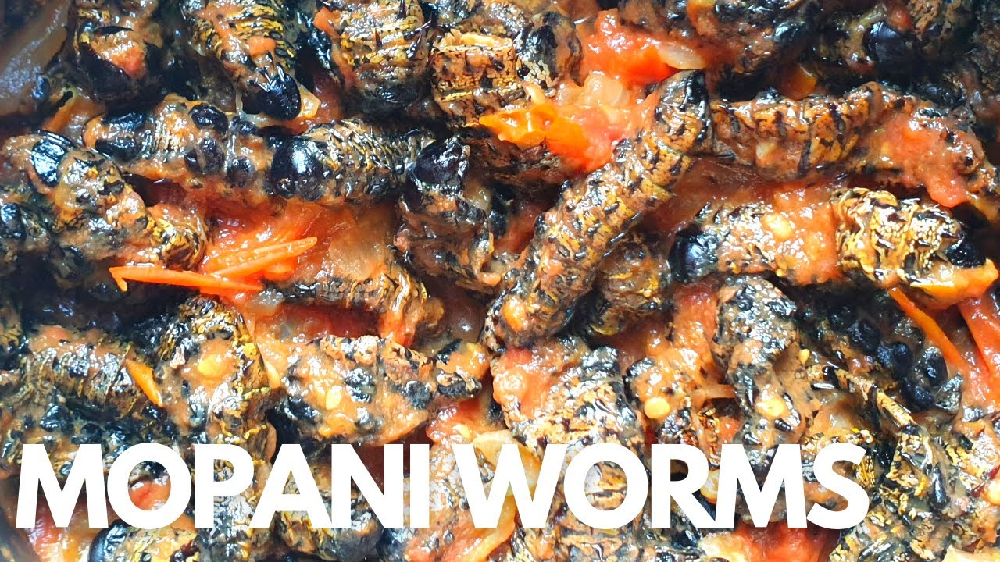

Tsonga Cultural Heritage
Discover the rich traditions and history of the Tsonga people

Sho Madjozi giving birth to new baby boy. Dj lekker was in the baby shower

Legendary Gaza Kitchen in Freedom Park

Mhani Xongi just released a fire Album. Click to be redircted

Xigaza monday with Lekker Stylist
About Tsonga Culture
The Tsonga people are a Bantu ethnic group native mainly to Southern Mozambique and the Northern provinces of South Africa. They are known for their rich cultural heritage, which includes vibrant traditional attire, music, and dance.
Tsonga culture is characterized by its unique traditional clothing, often made from colorful fabrics with distinctive patterns. These fabrics are used to create various garments, including skirts, headpieces, and accessories that hold cultural significance.

- Xibelani skirts - Colorful, multi-layered dance skirts
- Tinguvu-Traditional tops and blouses
- Traditional weeding attires-Complete for traditZZZzional
Tsonga clothing is not just apparel—it's a representation of cultural identity, social status, and heritage. The vibrant colors and patterns tell stories and signify important aspects of Tsonga culture.
more info

We have museum